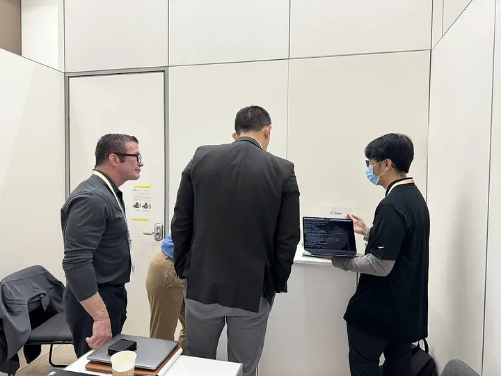
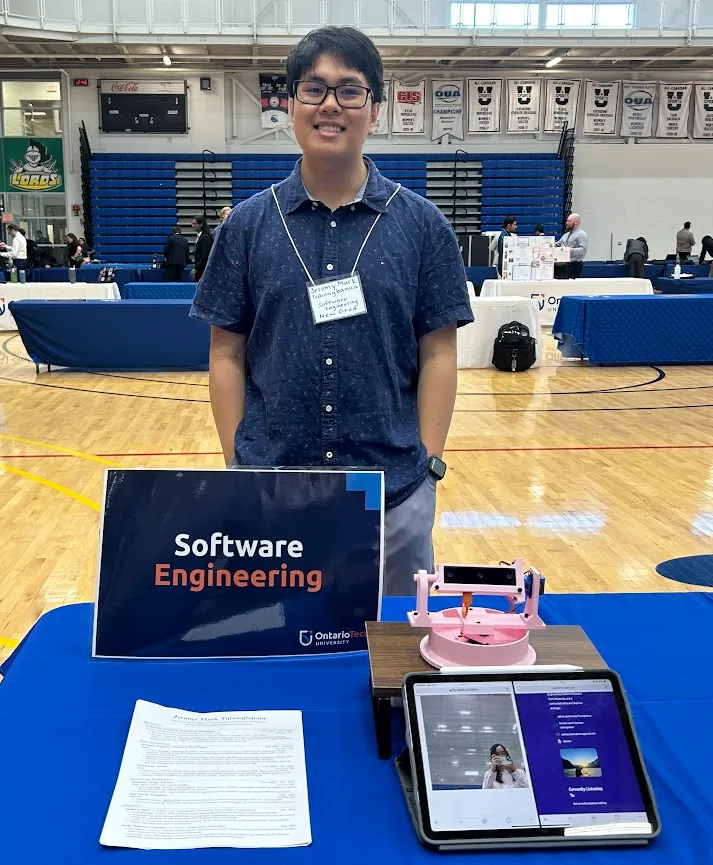
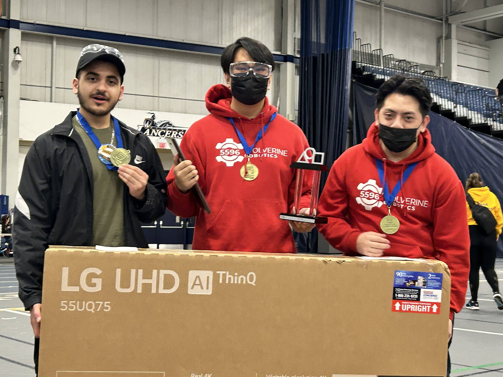

I am a contracted Software Engineer for Atsign, a Silicon Valley startup located in San Jose, California, doing all kinds of work in the fields of Embedded Microcontrollers, Cryptography, Talent Acquisition, and DevOps. I initially began as an intern in June 2022, and have been working ever since then. Atsign is revolutionizing networking security with Networking 2.0 with products like NoPorts, which allows you to remote access your devices securely without needing to exposing any network attack surfaces.

I am an incoming new graduate at the University of Ontario Institute of Technology in April 2025 with a Bachelor of Software Engineering. Career goals is to either secure a job in Software Engineering in C/C++, Embedded Deveopment, Security or AI/ML or secure a Master's position in Electrical and Computer Engineering.

My journey in engineering began as a FIRST Robotics Competition (FRC) programming mentee. Now, I volunteer my time to induce passion in STEM in elementary to high school students as a coach/mentor. I am also a Judge Advisor, leading adult judges yearly in judging lego robots at our annual official FLL lego robotics tournament.